美食筆記 · 來自 Obsidian · 2026-10-19 擷取
米其林牛肉燉鍋｜Bò Kho Gánh Sài Gòn
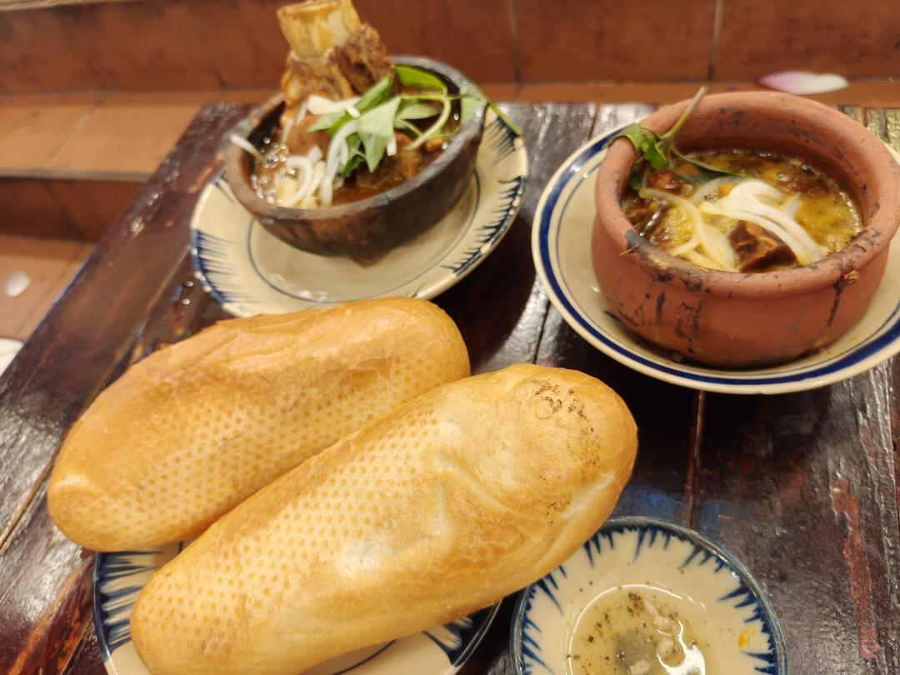
食物：Bò Kho（越南牛肉燉鍋）
特色：米其林推薦，店裡不少本地人來吃晚餐，很有當地日常的味道
價格：
- 牛腩＋牛筋｜70K VND
- 牛腩排｜140K VND
- 牛肉丸｜70K VND
評價：湯頭帶牛肉香氣＋紅蘿蔔番茄的酸甜，很開胃；牛筋燉得軟Q；牛肉若再燉久一點會更完美（牛腩排偏有嚼勁）；重點是一定要拿法國麵包沾湯——外脆內軟的法棍沾濃郁牛肉湯，絕配！牛肉丸超大顆、彈牙有肉感
📍 Bò Kho Gánh Sài Gòn — Lô H/029 Sư Vạn Hạnh, P.2, Vườn Lài
🕐 每日 10:00–22:00 | ⭐ 4.1（1527 評）| ☎ 0933 844 688
📸 實拍（共 11 張）
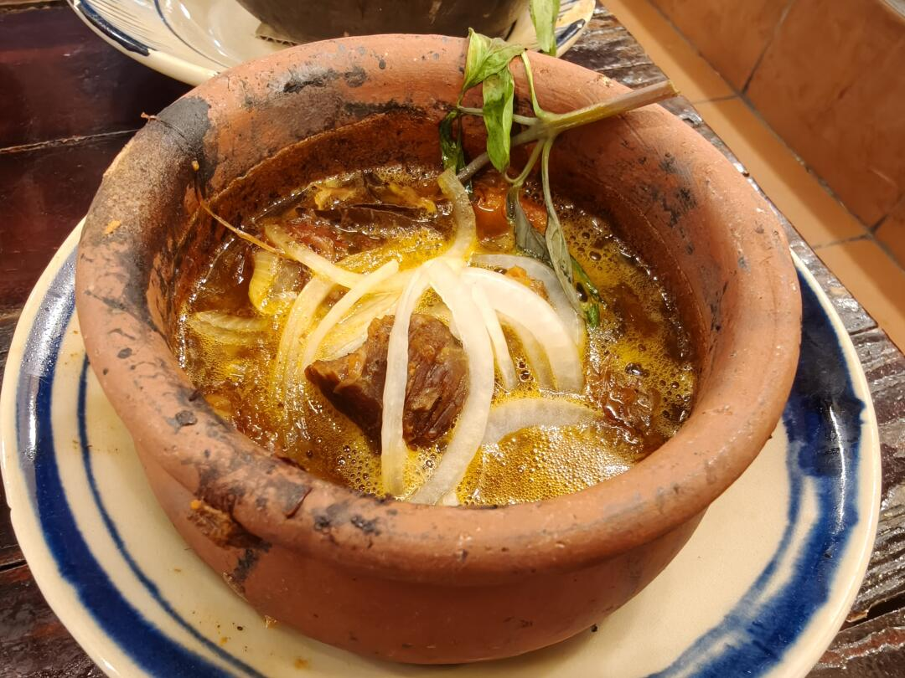
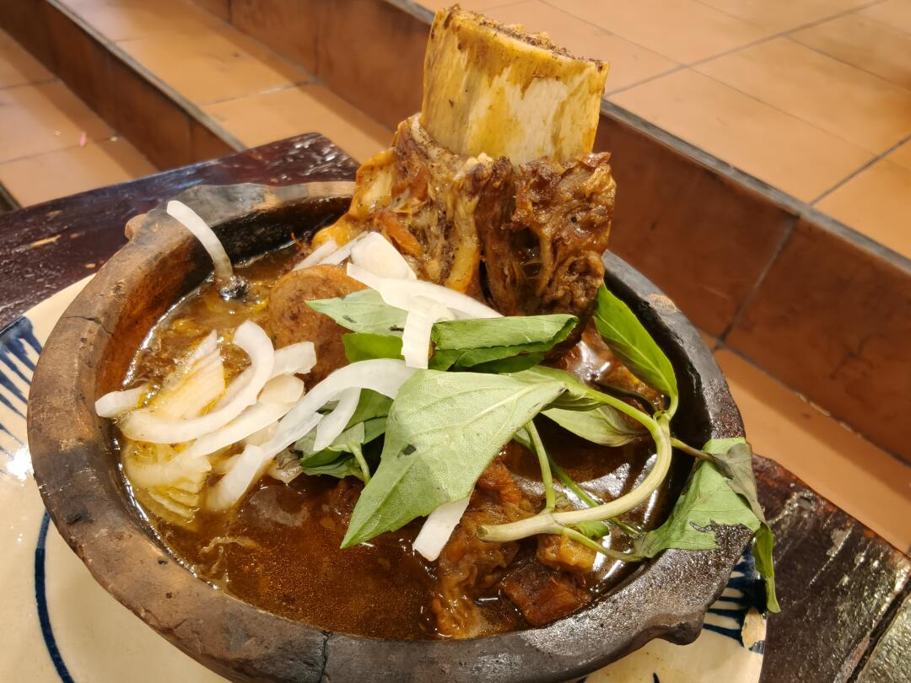
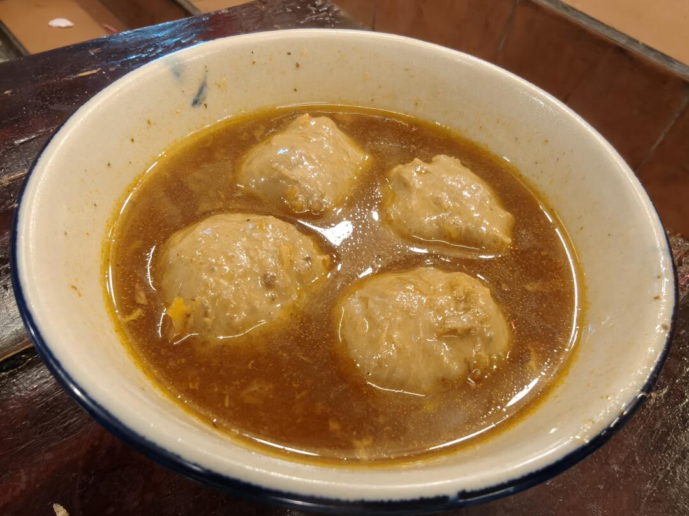
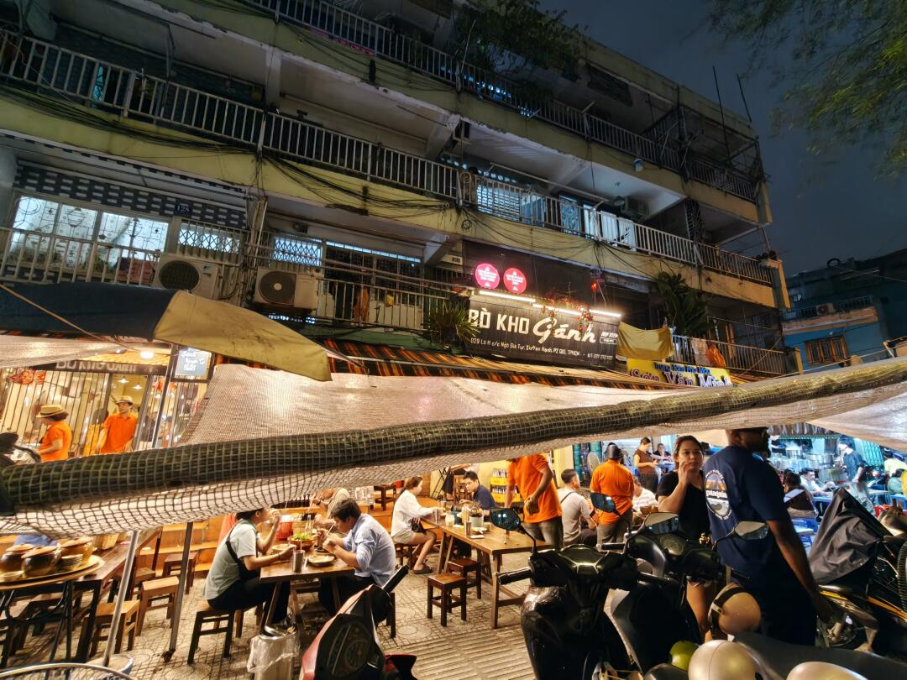
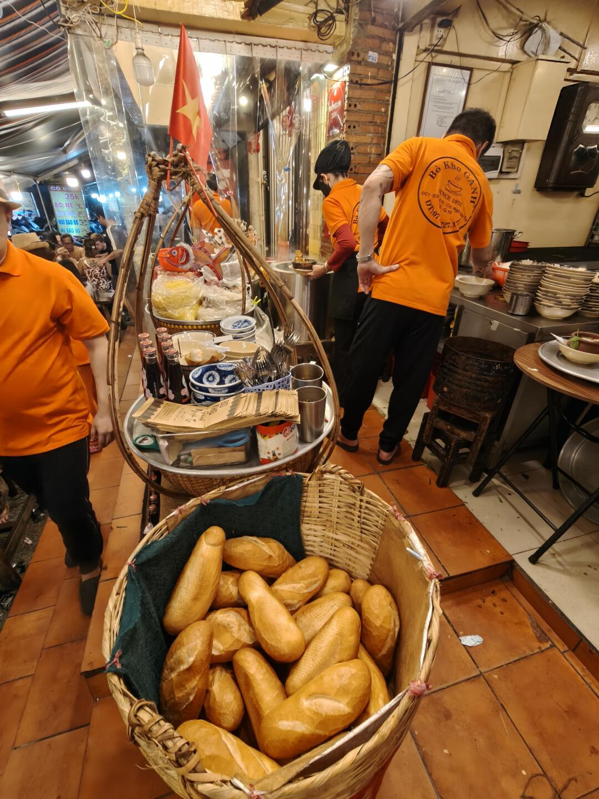
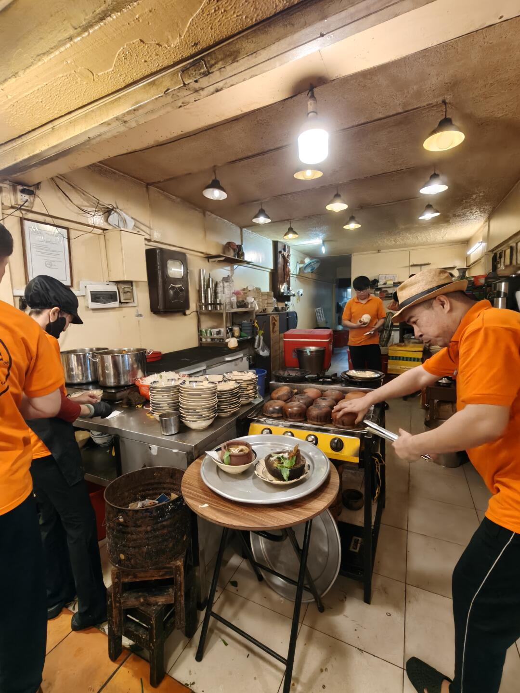
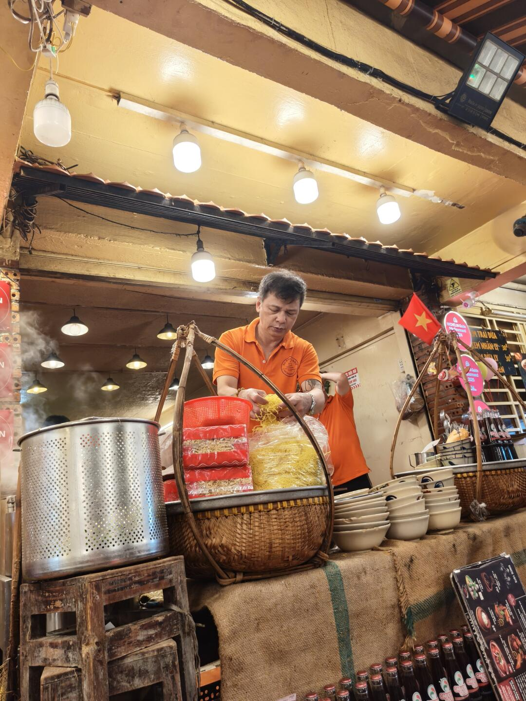
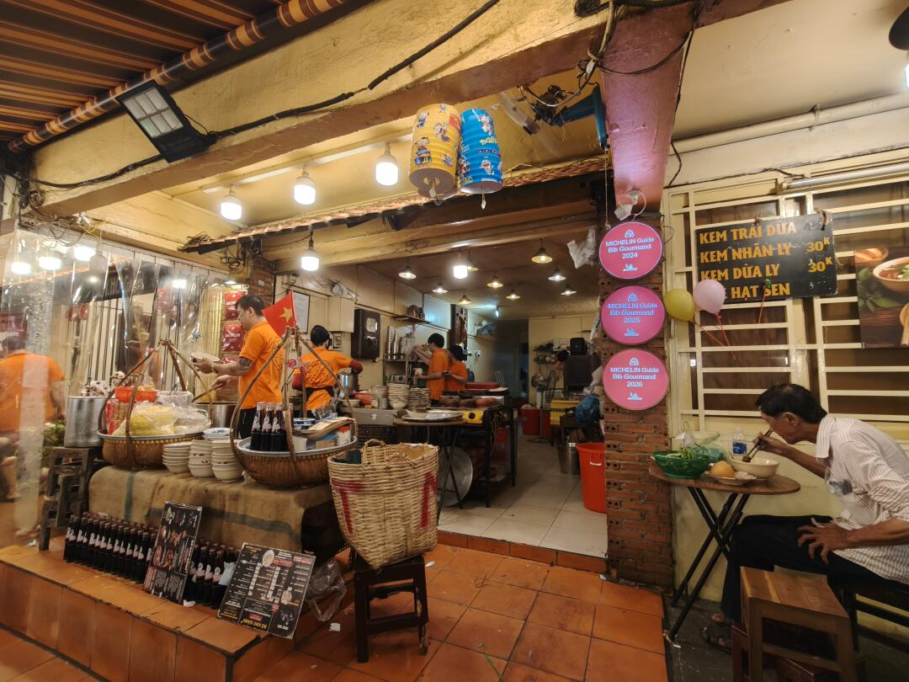
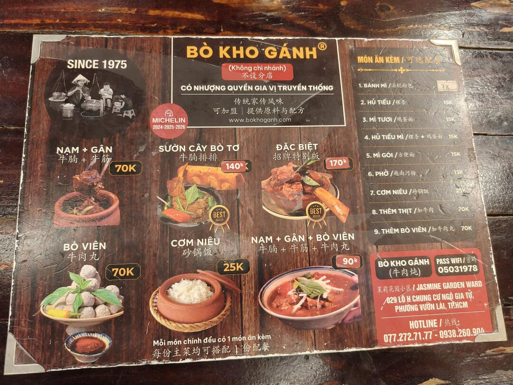
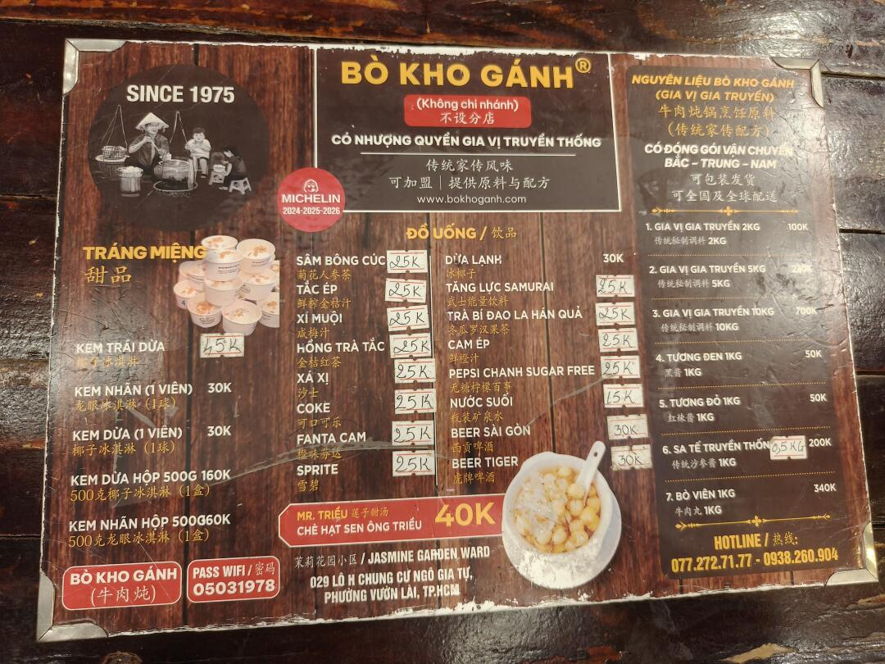
📌 資料來源：內容與全部 11 張照片來自小紅書實地帖文（Pebble 擷取至 Obsidian，2026-10-19）。
營業時間、價格與電話可能變動，出發前建議以現場或官方最新資訊為準。